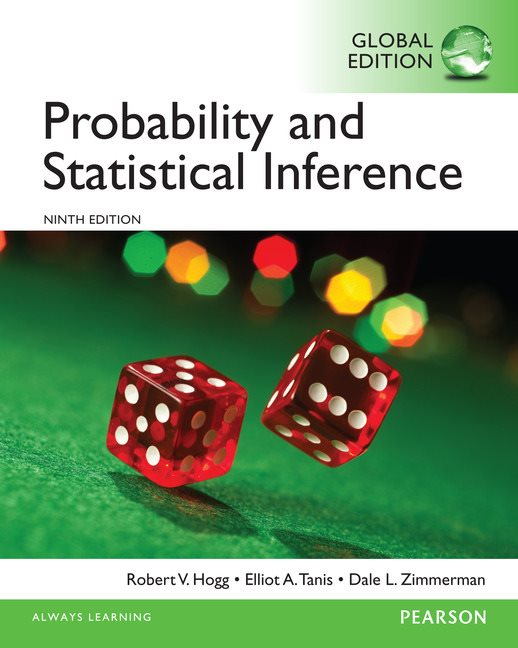

Instructor

Prof. Shou-De Lin / 林守德教授
Office: R333, CSIE Building
Website: https://www.csie.ntu.edu.tw/~sdlin/
Email: sdlin [at] csie.ntu.edu.tw
Prof. Shou-De Lin / 林守德教授
Office: R333, CSIE Building
Website: https://www.csie.ntu.edu.tw/~sdlin/
Email: sdlin [at] csie.ntu.edu.tw
| Date | Materials | Forums |
|---|---|---|
| [2018/03/01] | Introduction L0_why.pdf L0_Methods of Enumeration.pdf L0_Introduction.pdf |
Issues |
| [2018/03/08] | Axiom_prob, Conditional Prob, Independence, Baye’s Rule | TBA |
| [2018/03/15] | Random variables, Mean and Variance | TBA |
| [2018/03/22] | Discrete Probability Distribution | TBA |
| [2018/03/29] | Discrete Probability Distribution | TBA |
| [2018/04/05] | break | |
| [2018/04/12] | Continuous Probability Distribution, Normal Distribution | TBA |
| [2018/04/19] | Multivariable Distributions | TBA |
| [2018/04/26] | Midterm | |
| [2018/05/03] | Conditional Distributions, Correlation, Independency, Distribution of Functions | TBA |
| [2018/05/10] | Chebyshev’s Inequality, Central Limit Theorem, Law of Large Number | TBA |
| [2018/05/17] | Final Project Proposal | TBA |
| [2018/05/24] | Central Limit Theorem, Estimation, Chi-square | TBA |
| [2018/05/31] | Confidence Interval + Hypothesis Test | TBA |
| [2018/06/07] | Information Theory | TBA |
| [2018/06/14] | Language models & others, Probability & Life | TBA |
| [2018/06/21] | Final Project Presentation/Demo | |
| [2018/06/28] | Final |
Probability and Statistical Inference (8th or 9th version, Hogg & Tanis)

TAs Email: ntuprobabilitycsie [at] gmail.com
請優先使用issue討論區，並盡量以 ntu.edu.tw 為結尾之信箱寄信
助教: 李威承
Office: 528
Office hour: TBA
助教: 陳宣佑
Office: 304
Office hour: TBA